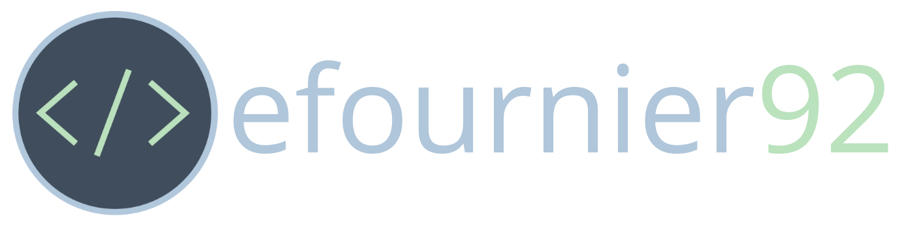

<mat-sidenav-container class="component-container">
  <mat-sidenav-content>
    <div style="width:60%;margin-left:20%">
      
      <!-- 
      <!-- alt=""> -->
      <p style="font-size:1.3em">
        I always liked to build things, so I learned to build software. My business degree never hurts in understanding
        feature initiatives and functionality. Best content as a jack of all trades, I've been a full-stack developer
        since
        2015.
      </p>
      <p style="font-size:1.3em">
        I built this website primarily to render markdown files (_my preferred syntax_). I created these [Guides]() for
        myself, but I hope someone else finds them useful too.
      </p>
      <p style="font-size:1.3em">
        The following are maxims I live by, which characterize my mission and core values.
      </p>
      <ol style="font-size:1.3em">
        <li>I'll never know everything. I'll always be acquiring skills. A day I learn nothing is a day I wasted.</li>
        <li>I learn from those who lived before me. I study their stories. I'm prepared when history repeats itself.
        </li>
        <li>I hear jokes every day. I make someone laugh every day. Pleasing others makes life worthwhile.</li>
        <li>My faith is in the scientific method. I won't believe what can't be proven. I question everything.</li>
        <li>My greatest virtues are patience and diligence; I exercise them daily.</li>
        <li>I don't look back: I look ahead. My past is just prologue.</li>
        <li>In whatever I do, I contribute focus, wit, congeniality, and dedication.</li>
      </ol>
    </div>
  </mat-sidenav-content>
</mat-sidenav-container>